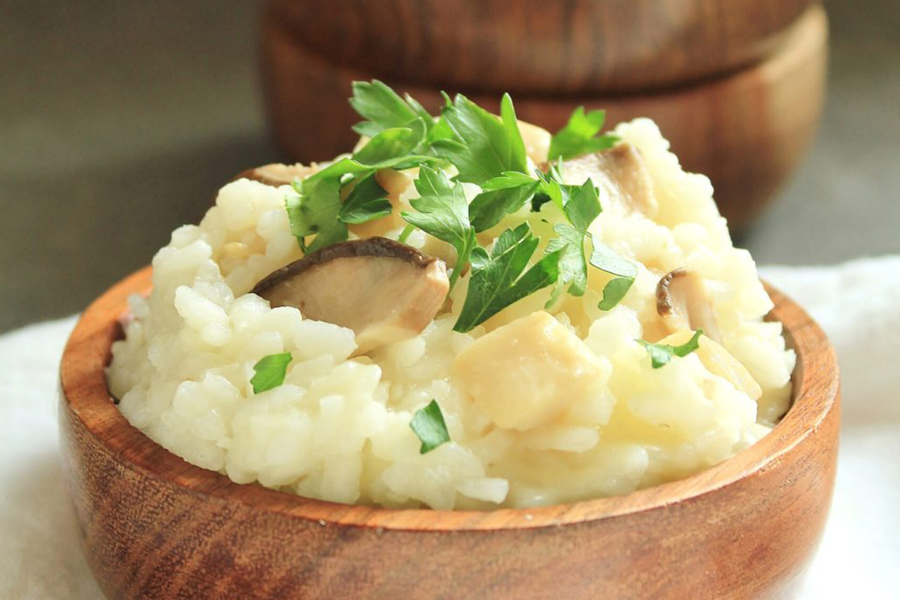

Senshi’s Quick Risotto with Mushrooms and Cheese from the Orcs

"Place a pot inside the magic circle. Toss some butter in to melt it.
Fry some garlic cloves, and then add the rice. add in mushrooms and
seasoning. Pour in water and let it simmer for a while. Mmm! I could put
some cheese in . . . It’s ready!"
Ingredients
- 2 large royal trumpet mushrooms (or 4-6 baby bella mushrooms)
- 2 Tbsp butter
- 1 Tbsp olive oil
- 3 cloves garlic, minced
- 2 cups Arborio rice
- 1 1/2 tsp salt
- 1/2 tsp onion powder
- 1 1/4 cup (approx. 3 oz ) Swiss cheese
- chopped fresh parsley, optional
Makes 6 cups risotto with mushrooms and cheese
Steps
-
Gently rinse and dry the mushrooms. Cut off the caps and cut them into
strips. Dice the stems. Set aside.
-
Place a medium saucepan over medium-low heat. Add the butter and olive
oil. When the fat is hot, add the garlic and cook for 1 minute,
stirring constantly. Add the mushrooms and cook for 2-3 minutes until
the mushrooms release their liquid, it cooks off, and they begin to
brown. Add the rice and cook for 3 minutes, stirring regularly. Stir
in salt and onion powder.
-
Gradually and gently stir in 3 1/2 cups wate. Set heat to medium-high
and bring to a boil. Return heat to medium-low. Cover and simmer for
15 minutes or until water is absorbed and rice is cooked through.
While you wait, coarsely grate the Swiss cheese.
-
When rice is cooked through, remove from heat and stir in the cheese
until melted. If desired, top with chopped fresh parsley.
-
Serve to an Izutsumi . . . and try not to be offended when she says
she doesn’t like mushrooms!
HOME